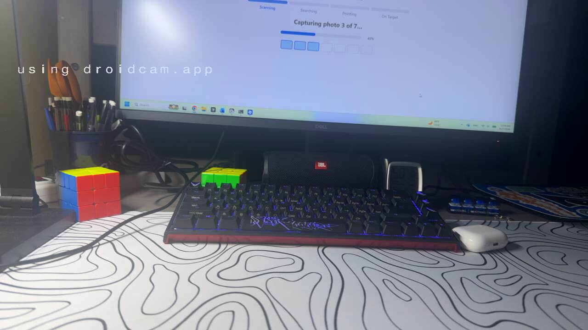

For someone who cannot search the room
Where are my glasses?
Theia is a tabletop turret. You ask for an object. A camera looks around the room, circles it on screen, and gives the angle a laser can point to.
Try a saved scan
This page cannot see your room. It plays a real search from our desk: “find my airpods.” The full camera and laser run from the project.
What are you looking for?
Tap the mic, or type the sample and press Find it
- Scanning
- Searching
- Pointing
- On Target
Capturing photo 1 of 7…
Found white earbud case.

white earbud case- Bounding box
- 652, 358 → 737, 438
- Center
- 694, 398
- Image size
- 1280 × 720
- Aim
- az 3.4°, el -3.1°
- Offset from center
- 66 px
What you see
- You speak. When the sentence ends, the search starts. Typing still uses Find it.
- The camera sweeps. Seven photos cover the desk or the room.
- One object is circled. If it shows up more than once, Theia keeps the strongest view.
- The laser gets an angle. Azimuth and elevation are the point in the room.
The same question, more rooms
We started with people living with dementia, and with anyone who misplaces glasses, keys, or medication. A caregiver, a clinic closet, or a shared desk can ask the same thing: find this.
Run the full app